To begin using OpenEMR, navigate to your server's installation directory and log in using your assigned username and password.
A successful login brings you to the appointment calendar. Before you begin scheduling appointments you'll want to configure some basic information for your users. To start setting up your clinic, select 'Administration' from the navigation list on the left of the screen. This will bring up a list of available administration pages. Click 'Facilities' to bring up the Facility Administration page.
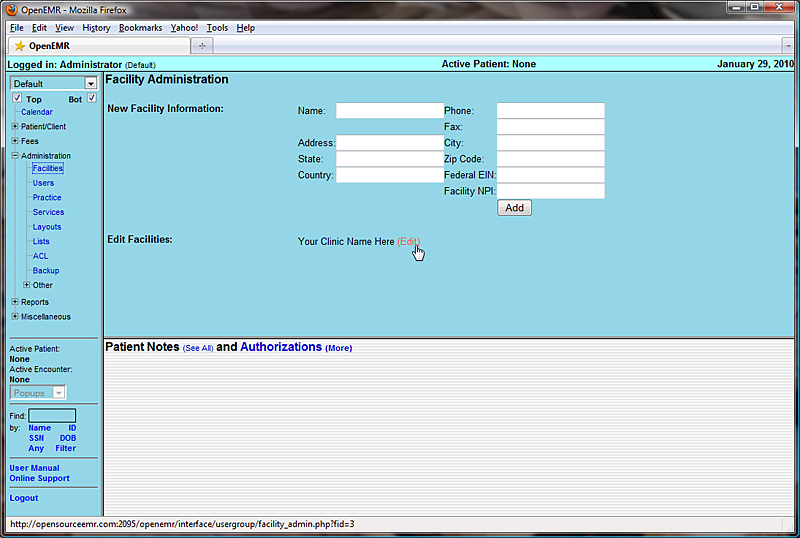This is one of several pages within the Administration section of OpenEMR. Administration also includes sections for managing your facility's Forms, Practice information, Calendar categories, Lists, Database administration, and more. Links to these sections can be found in the left hand navigation list under 'Administration' (or at the top of the page if you're using one of the other navigation schemes).
We'll start by setting up your facility for your users. There is a default clinic already built in. It will need to be updated with the correct information for your clinic. To do this, click 'edit' next to the line labeled “Your Clinic Name Here”
This takes you to the Edit Facility page.
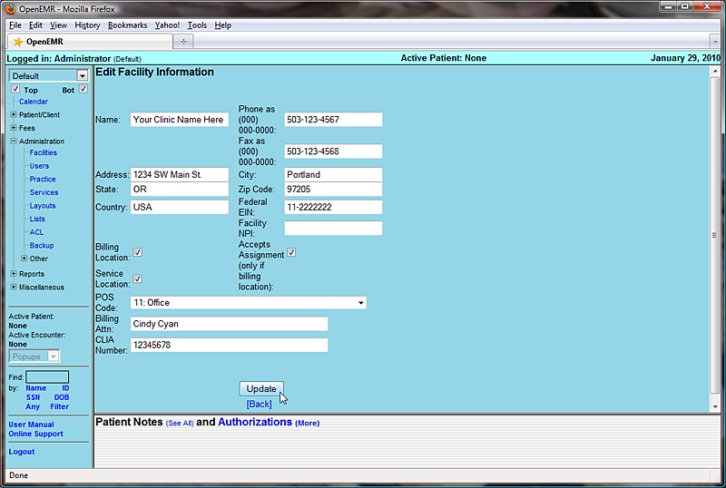Enter the correct name, address & contact information for your clinic. This information will be used for billing, so make sure to include who to direct billing information to, and enter your facility's NPI and CLIA number. Indicate whether your facility is a billing and/or service location by clicking the checkbox next to the appropriate option. If your clinic is a billing location, you may also want to check the “Accepts Assignment” box.
When you are finished entering your clinic's information click the 'Update' button, then click 'Back' to return to the Facility Administration page.
Your clinic may have additional facilities in which care is given, such as a hospital. To add these, enter them into the “New Facility Information” section and click the 'Add' button.
Clicking 'Administration - Users' in the navigation list will bring you to the User Administration page. The bottom of this page contains a list of your clinic's users. If you have not yet added any users, then only "admin" will be shown.
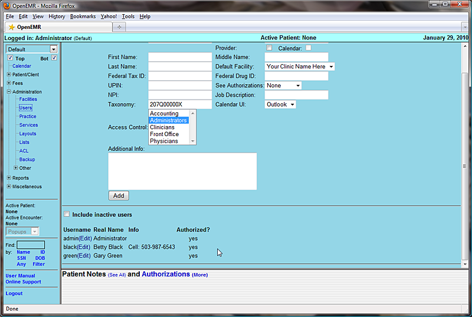You can add a new user by filling in the form to the right of the "New User" heading and then clicking 'Add.' Or you can modify an existing user by clicking the 'Edit' link next to that user's name.
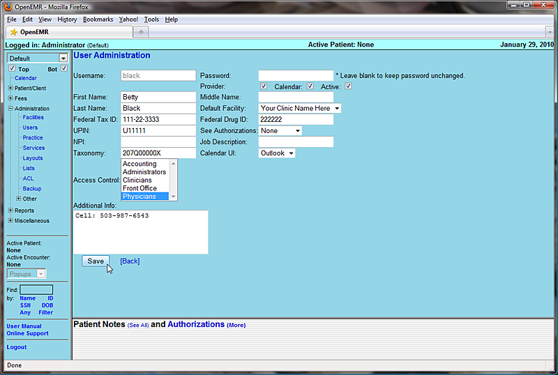Clicking 'Edit' will bring up the user's profile. Here you can edit a user's password, facility information and access controls, as well as their authorization status. Authorized users are practitioners, and will appear in the appointment calendar. They can also be associated with encounters for billing purposes, and are able to authorize encounter information entered by non-authorized users so that the encounter will be billable.
To authorize your practitioners click the 'Provider' check box in the User Administration page. Other facility staff do not need to be authorized. Practitioners will also need their UPIN and Federal Tax ID entered for correct billing, as well as their Federal Drug ID for prescription writing.
Once your user's information has been updated successfully click 'Save' to return to the User Administration page.
Next you'll need to enter the relevant practice information for your clinic. This includes pharmacy and insurance company information, as well as the types of documents your clinic accepts.
Clicking the 'Practice' link in the navigation menu will bring you to the Practice Administration page.
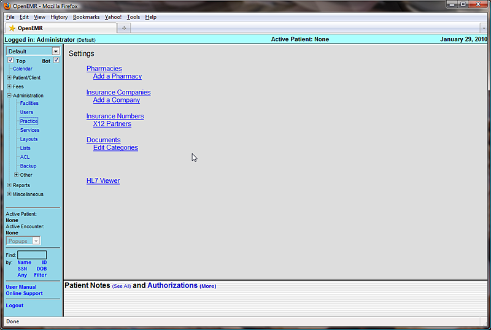Click 'Add a Pharmacy' to enter the contact information for your clinic's pharmacy. A drop down menu lets you select the preferred method for transferring prescription information. Once you've entered the correct information, click 'Update' to save your new pharmacy.
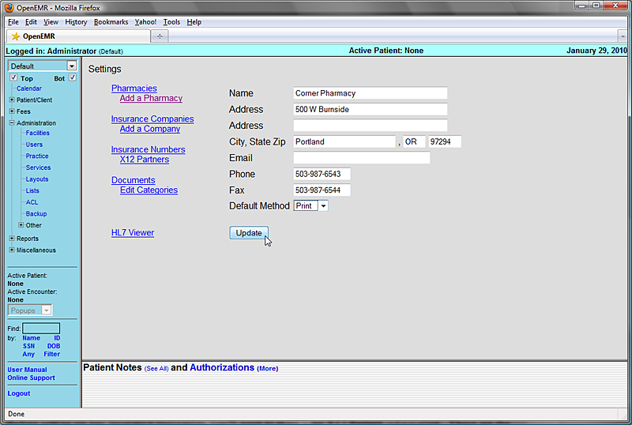Before setting up any insurance companies, you'll want to enter your X12 Partner information. These are the clearinghouses or large payers to whom you will send electronic billing. Most practices will probably just use a single clearinghouse.
To add one of these clearinghouses, click on 'X12 Partners' and then click 'Add New Partner'.
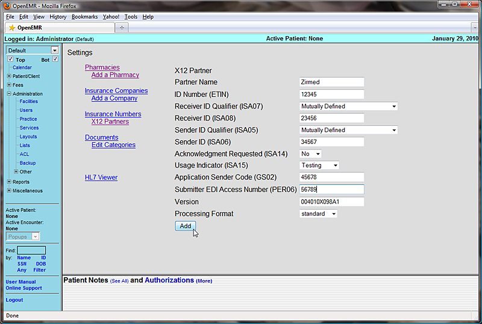The ID numbers that you enter here will need to be provided to you by the clearinghouse/partner. The Version number refers to the version of the X12 837p protocol specification used and should probably not be changed. Click 'Add' to save the information you've entered.
Selecting 'Insurance Companies' from the links to the left of the page brings up a list of Companies that have been added to your clinic. If this is a new installation of OpenEMR, this list will be empty. You can add a new insurance company by clicking 'Add a Company'. Or, you can edit an existing company by clicking on it's name in the list.
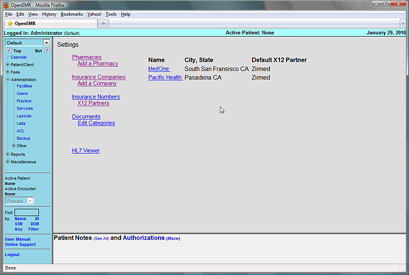Once you have entered the correct information, click 'Update' to save any changes, or add the new company to the list.
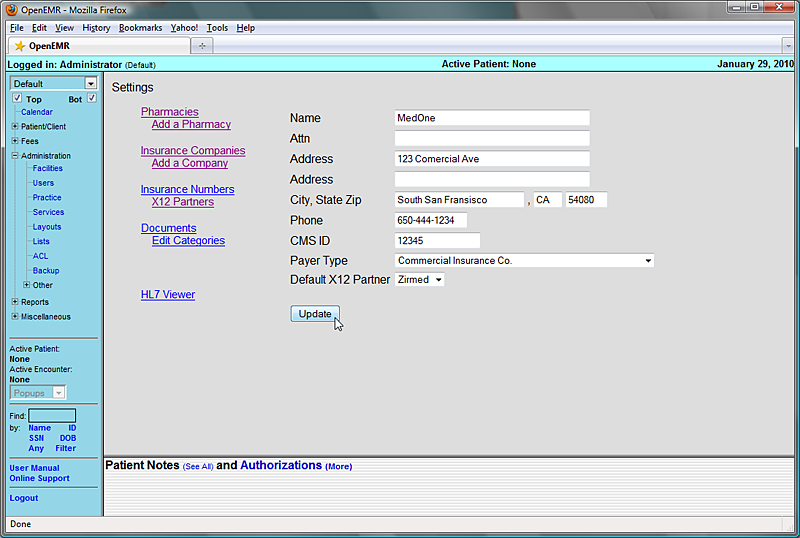In practice, many insurance companies have multiple insurance plans with a separate billing address for each plan. At this time, you will need to add each plan as a separate insurance company.
Many insurance companies also assign their own doctor-specific ID numbers, and these numbers must appear in your claims. Click on 'Insurance Numbers' to see a list of your clinic's providers and their default ID numbers.
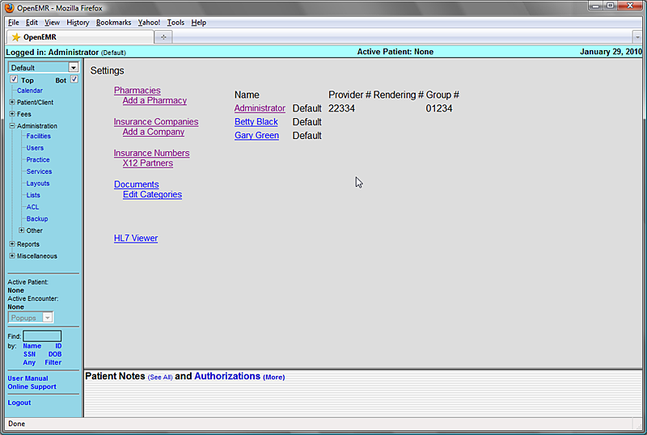Click on a provider's name to bring up a list of insurance companies and the corresponding ID numbers that have been entered for that provider.
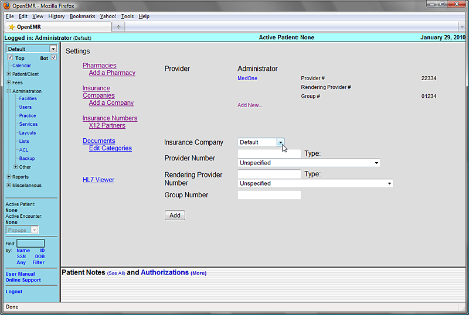Selecting 'Add New...' presents a form for adding this provider's numbers for another insurance company. Fill in this information and click the 'Add' button to save. You can also edit an existing set of numbers by clicking on the company name in the list.
Note that one of the selections in the drop down list of insurance companies is "Default"; you can use this to fill in default numbers for insurance companies not otherwise entered.
Next click on 'Edit Categories'. This displays a hierarchy of the different types of documents that you can attach to a patient. The default set is shown. To add more categories click on the desired parent name, fill in the name of the new document type, and click 'Add Category'
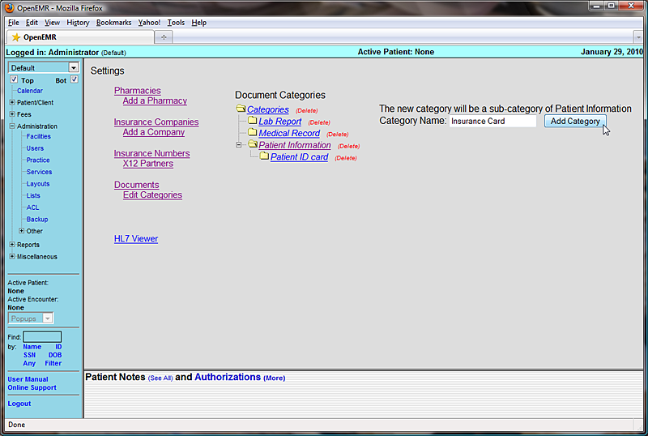Select 'Lists' from the menu at left. This brings you to OpenEMR's List Management system. This is where many of the selection lists within OpenEMR are stored and edited. Before you begin using OpenEMR you will need to populate these lists with data appropriate to your clinic.
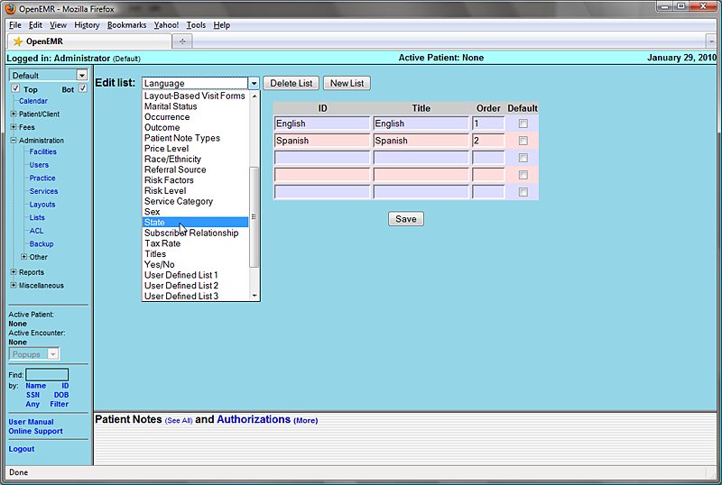Select 'State' from the drop-down list. OpenEMR comes configured with only one state by default. If your clinic sees patients from only one state you can simply replace the default state by clicking in the 'ID' and 'Title' fields and replacing them with the appropriate information.
Alternatively, you can add multiple states by filling in the empty fields that are provided for you. You can also specify which state you would like to use as the default by selecting the checkbox next to that state.
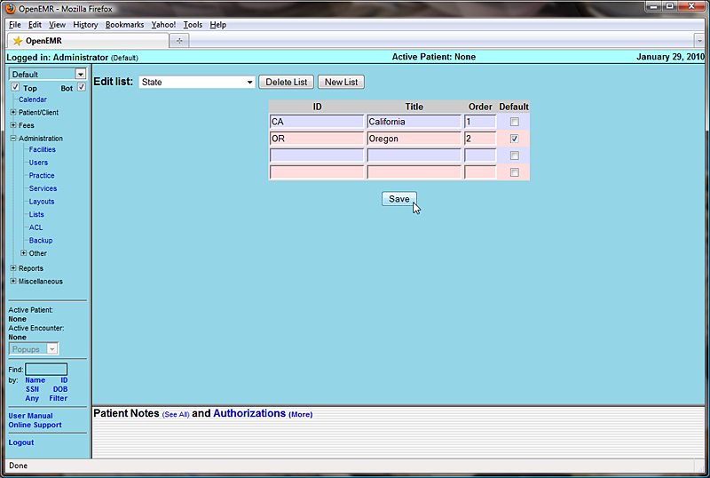When you are finished modifying the list, click 'Save'. This will update the list and generates a new set of empty fields should you need to add additional states to the list.
The drop-down contains lists for Race/Ethnicity, common billing codes that appear in the Fee Sheet, Price Levels, common Exams/Tests, etc. All of these lists may be modified in this same manner.
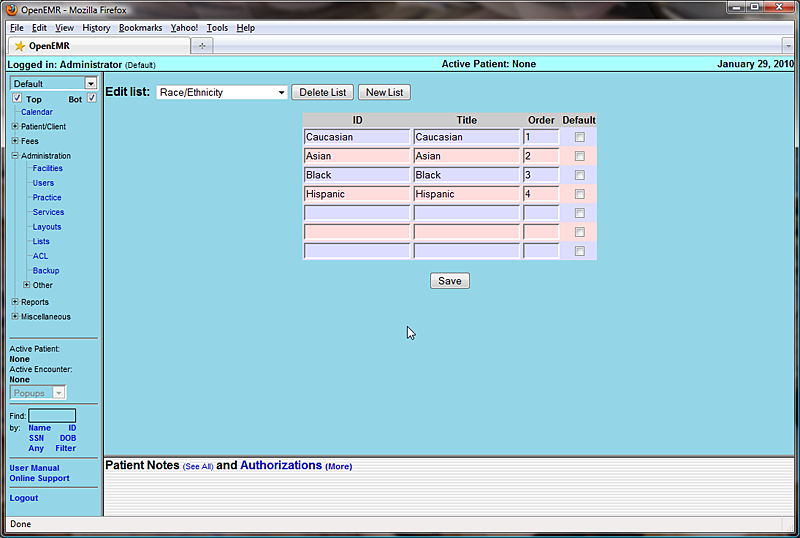OpenEMR also contains a built-in address book for storing useful contact information for your staff as well as other doctors, clinics, etc. that your office may contact on a regular basis.
Select 'Addr Bk' (under 'Miscellaneous') from the navigation menu to bring up your clinic's Address Book.
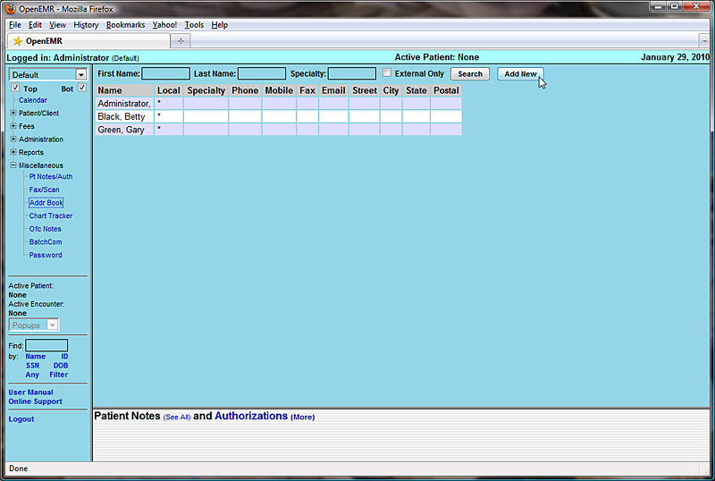This will present you with a list of all of the contacts currently contained in your Address Book. Click on a person's name to edit their contact information, or click 'Add New' to enter a new contact into your address book.
In the 'Add New Person' dialog box, select a title, and enter their name and address. If you are adding a physician to your address book, be sure to include their UPIN and other ID numbers for billing and referrals. Entering a 'Specialty' will allow you to narrow your search parameters when writing letters to a particular physician, etc.
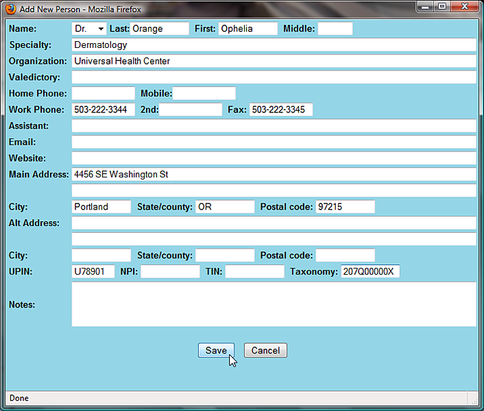When you are finished entering the new contact information, click 'Save'.
Note that the new contact has been added to the list.

You can search for a particular contact in the address book by entering their name and/or specialty at the top of the page and clicking 'Search'. This brings up a list of any contacts matching your search parameters.
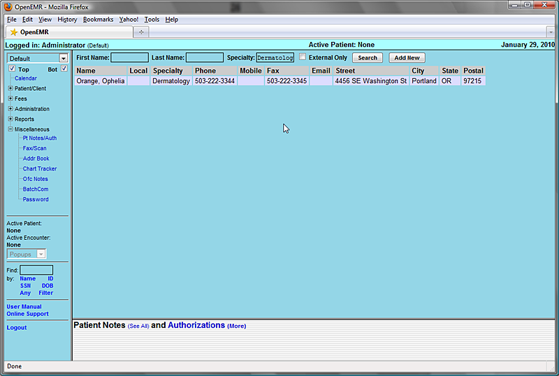